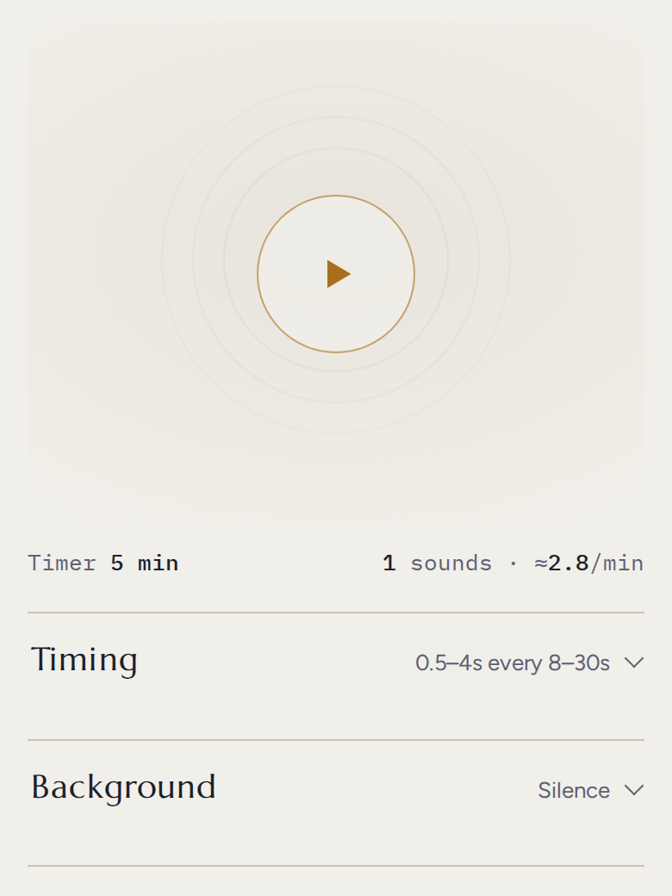
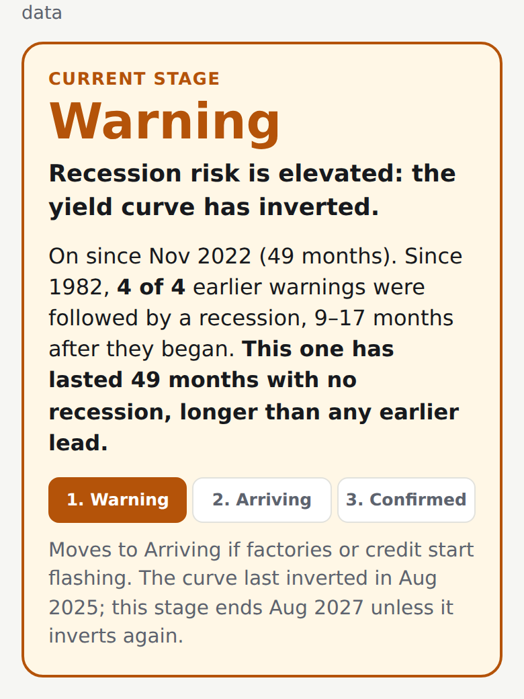
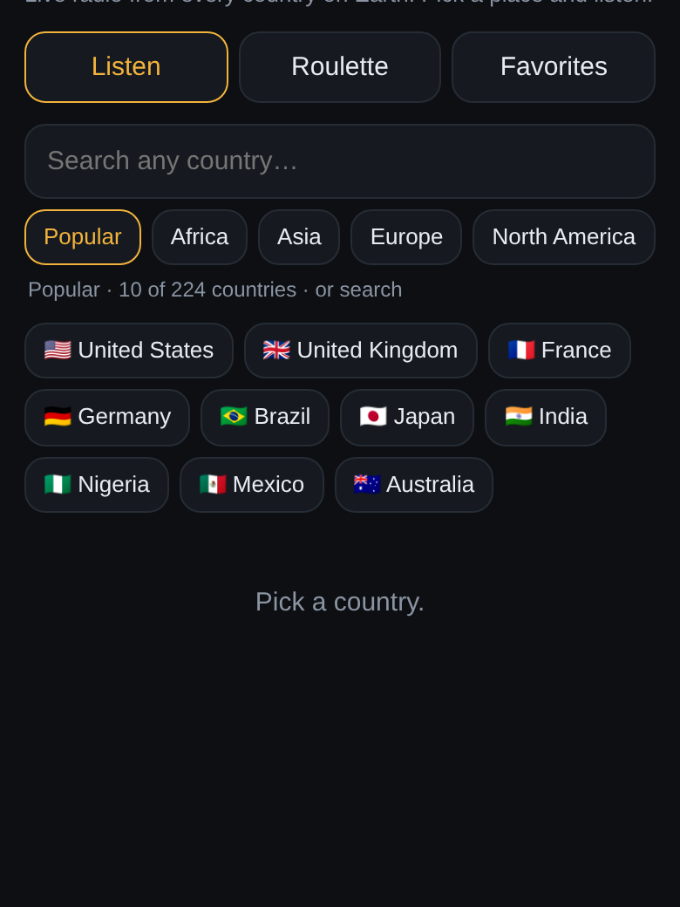
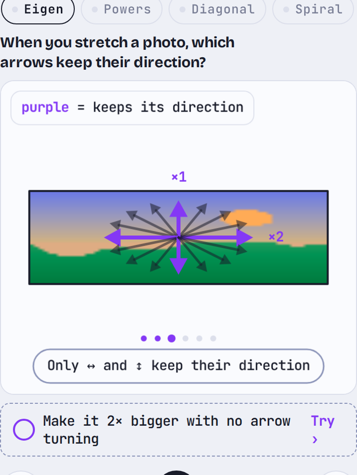

Agentic Builds
5 collections · updated Nov 18Collection · 3 builds
Things that make sound
Generative music and a memory game for your ears.
1

Jam BandFEATURED
A generative jam band in one page: pick a genre and listen.
Pick a genre and a band jams it for you.
2

Simon Says Piano
Listen, then play it back: a piano memory game in any key and mode, with strings or horns underneath.
Listen, then play it back, in any key.
3

Lull
A generative sound meditation. Bowls, bells, birds and water come and go at random.
Bowls, bells, birds and water for winding down.
More collections
4 builds
NFL decision tools
Builds that turn open NFL data into the calls a coach, GM or fantasy player actually makes.


3 builds
Spanish learning stack
From A1 listening to B1 conversation, in the order to use them.


5 builds
Public data, made useful
Free public datasets turned into something worth checking every day.





3 builds
Learn by watching
Concepts shown as motion and play, not walls of text.
